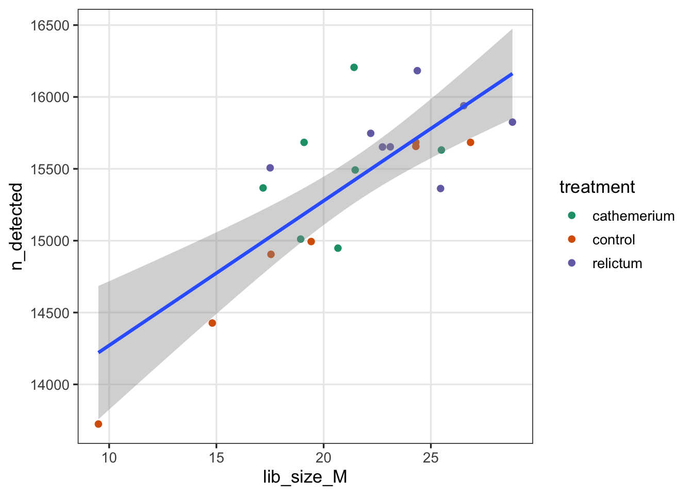
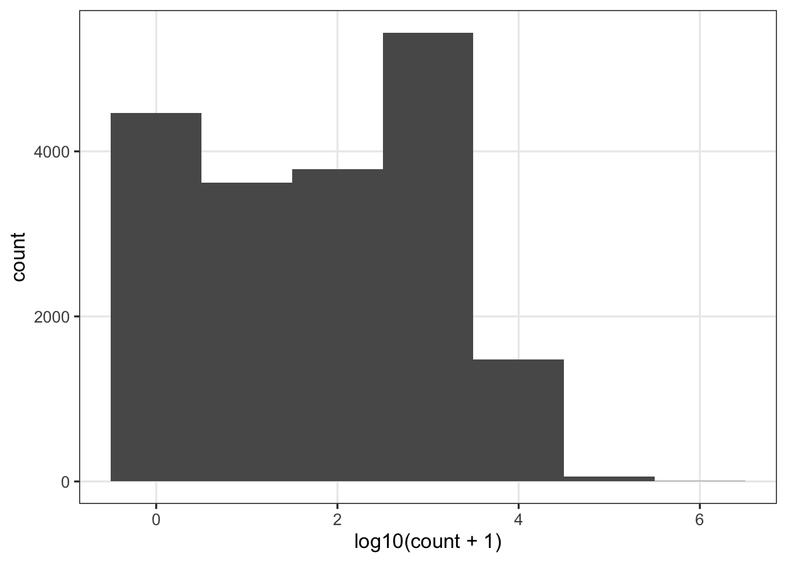

![]()
library(tidyverse)Additional plotting with ggplot2
Optional self-study content for week 13
1 Introduction
1.1 Overview
This page contains additional plotting material that builds on the week 13 data visualization lecture. The page covers the following topics:
- Setting a default theme — Using
theme_set()to give all plots the same look - Color palettes and customizing themes
- Gene length and expression — Building a plot from scratch
- Bar graphs with
geom_bar(), histograms, and box plots of gene counts - Faceting — Splitting a plot into multiple panels
- Combining plots into one figure — Using the patchwork package
1.2 Setting up
- Open Positron and connect to OSC with your personal dir open, like in the w12b lecture.
- Open your
week13folder in Positron, and create a new Quarto documentbonus_plotting.qmdin it, with a YAML header. - Run the examples and exercises in code chunks in this document.
1.3 Packages and data
This page uses the same package and data as in week 13. Load the tidyverse, which includes ggplot2:
Read the count table, the metadata, and the gene annotation table:
counts <- read_tsv(
"/fs/ess/PAS3493/share/week13/salmon.merged.gene_counts_length_scaled.tsv"
)
meta <- read_tsv("../garrigos/meta/metadata.tsv")
genes <- read_tsv("/fs/ess/PAS3493/share/week13/genes.tsv")Make a long-format count table with the metadata added, with the time points as a factor so that 24 hpi comes first, and compute the per-sample summaries from the week 13 lecture:
counts_long <- counts |>
select(!gene_name) |>
pivot_longer(cols = !gene_id, names_to = "sample_id", values_to = "count") |>
left_join(meta, by = "sample_id") |>
mutate(time = factor(time, levels = c("24hpi", "10dpi")))
sample_stats <- counts_long |>
summarize(
lib_size_M = sum(count) / 1e6,
n_detected = sum(count > 0),
.by = c(sample_id, treatment, time)
)2 Setting a default theme with theme_set()
In the week 13 lecture, you added a theme like theme_bw() to individual plots. When you want all your plots to have the same look, you can instead set a default theme with theme_set(). For example, to use theme_bw() with a few changes:
theme_set(
# base_size sets the size of all text (default: 11)
theme_bw(base_size = 13) +
theme(
# Remove the minor grid lines (those between the axis ticks)
panel.grid.minor = element_blank(),
# Center the title (default: left-aligned)
plot.title = element_text(hjust = 0.5)
)
)All plots that you make after running this code will use this theme, including all plots in the rest of this page. Things to keep in mind:
- The default theme only lasts for the current R session. So, in a Quarto document, put
theme_set()in a chunk near the top, right after loading your packages. - You can still change the theme for individual plots, by adding
theme()or another theme to them (see the section on customizing themes below). - To go back to ggplot2’s default theme, run
theme_set(theme_gray()).
3 Color palettes
What if you have 10 treatments that you want to color? Picking all colors manually with scale_color_manual() requires a lot of typing. Instead, you can use ready-made color palettes, such as those from the RColorBrewer package that you installed in week 12:

To use one of these palettes, use ggplot2’s scale_color_brewer() function (you don’t need to load RColorBrewer for this). For example, to use the Dark2 palette for a scatter plot:
sample_stats |>
ggplot(aes(x = lib_size_M, y = n_detected)) +
geom_point(aes(color = treatment)) +
scale_color_brewer(palette = "Dark2") +
geom_smooth(method = "lm")`geom_smooth()` using formula = 'y ~ x'
4 Customizing themes
When you add theme() to a plot, it changes only the elements you specify, and keeps everything else from the default theme that you set with theme_set(). In the week 13 lecture, you used theme() to move the legend and remove grid lines. Text elements like titles and axis labels are changed with element_text(). For example, to change the text size of the plot title and axes, and to center the title:
sample_stats |>
ggplot(aes(x = lib_size_M, y = n_detected)) +
geom_point(aes(color = treatment)) +
geom_smooth(method = "lm") +
labs(
title = "Detected genes vs. library size",
x = "Library size (millions of reads)",
y = "Number of detected genes"
) +
theme(
# hjust is the horizontal justification: 0 = left, 0.5 = center, 1 = right
plot.title = element_text(size = 18, face = "bold", hjust = 0.5),
axis.title = element_text(size = 15),
axis.text = element_text(size = 13)
)`geom_smooth()` using formula = 'y ~ x'
For all theme elements that you can change, see the theme() documentation .
5 Gene length and expression
Are longer genes more highly expressed? To find out, first compute the mean count of each gene, and add the information from the gene annotation table from the data wrangling lecture:
gene_stats <- counts_long |>
summarize(mean_count = mean(count), .by = gene_id) |>
left_join(genes, by = "gene_id") |>
# Only keep expressed protein-coding and lncRNA genes:
filter(biotype %in% c("protein_coding", "lncRNA"), mean_count > 0)(If you did Exercise 4 of the week 13 exercises, this is the same as the gene_means data frame you made there.)
Exercise: Build a plot from scratch
Create a scatter plot of transcript length (x-axis) versus mean count (y-axis), with:
- Both axes on a log scale, by adding
scale_x_log10()andscale_y_log10()layers - Points colored by biotype
- A separate linear trend line for each biotype
Do longer genes have higher counts? And which of the two biotypes tends to be more highly expressed?
Click to see the solution
gene_stats |>
ggplot(aes(x = transcript_length, y = mean_count, color = biotype)) +
geom_point() +
geom_smooth(method = "lm") +
scale_x_log10() +
scale_y_log10()`geom_smooth()` using formula = 'y ~ x'
To get a separate trend line for each biotype, color = biotype has to be a global mapping inside ggplot().
Longer genes tend to have somewhat higher counts, because each RNA molecule of a longer transcript produces more sequenced fragments. lncRNA genes tend to have much lower counts than protein-coding genes.
6 Bar graphs with geom_bar()
In the lecture, you made bar graphs with geom_col(), where the bar heights are values that are already in your data: you map one variable to x and one to y, and each row becomes one bar.
A closely related geom is geom_bar(), which instead counts the number of rows for each category. You only map a single variable (to x or y), and geom_bar() computes the bar heights for you. For example, to plot the number of genes of each biotype, you can use geom_bar() on the annotation table, which has one row per gene:
genes |>
ggplot(aes(y = biotype)) +
geom_bar()
We put biotype on the y-axis here, which gives horizontal bars, so the long category names don’t overlap. To make the same plot with geom_col(), you would first have to compute the counts yourself with count().
So, in short:
- Use
geom_col()when your data frame already contains the numbers to plot. - Use
geom_bar()when you want to plot the number of rows per category.
7 Histograms
To see the distribution of a single numeric variable, use a histogram. Like geom_bar(), geom_histogram() counts rows, but it first groups the values of a continuous variable into “bins”. Let’s look at the distribution of gene counts in sample S63:
counts_long |>
filter(sample_id == "S63") |>
ggplot(aes(x = count)) +
geom_histogram()`stat_bin()` using `bins = 30`. Pick better value `binwidth`.
This plot is not very informative: because a few genes have extremely high counts, nearly all genes end up in the first bin. For counts like these, a log scale works much better. Because log10(0) is -Inf, a common trick is to add 1 to the counts first, which you can do right inside aes().
ggplot2 uses 30 bins by default, and prints a message suggesting you choose a better value. You can set the width of the bins with binwidth (here in units of log10(count + 1)):
counts_long |>
filter(sample_id == "S63") |>
ggplot(aes(x = log10(count + 1))) +
geom_histogram(binwidth = 0.1)
The bar at 0 shows the genes without any reads, and most other genes have between 10 (1 on the x-axis) and 10,000 (4 on the x-axis) reads.
Exercise: Histograms
Try a much smaller and a much larger
binwidth, like 0.01 and 1. What happens to the histogram?Click to see the solution
counts_long |> filter(sample_id == "S63") |> ggplot(aes(x = log10(count + 1))) + geom_histogram(binwidth = 0.01)
counts_long |> filter(sample_id == "S63") |> ggplot(aes(x = log10(count + 1))) + geom_histogram(binwidth = 1)
With very narrow bins, the histogram gets spiky and noisy, while with very wide bins, you lose the shape of the distribution. There is no single correct binwidth, so it’s worth trying a few.
Plot the histogram (with
binwidth = 0.1) for both sampleS63and sampleS77, which has the smallest library, and fill the bars bysample_id. How are the bars of the two samples arranged?Click to see the solution
counts_long |> # Keep the rows for either of the two samples: filter(sample_id %in% c("S63", "S77")) |> ggplot(aes(x = log10(count + 1), fill = sample_id)) + geom_histogram(binwidth = 0.1)
The bars of the two samples are stacked on top of each other, so the total height of each bar is the count across both samples.
Now, add
position = "identity"andalpha = 0.5insidegeom_histogram(). What does each of these two options do? And how do the distributions of the two samples differ?Click to see the solution
counts_long |> filter(sample_id %in% c("S63", "S77")) |> ggplot(aes(x = log10(count + 1), fill = sample_id)) + geom_histogram(binwidth = 0.1, position = "identity", alpha = 0.5)
position = "identity"stops the stacking: each sample’s bars start at zero, so they overlap.alpha = 0.5makes the bars semi-transparent (alpharanges from 0, fully transparent, to 1, opaque), so you can see the overlapping bars.
The distribution of
S77is shifted to the left, and it has more genes with zero counts: with fewer reads in total, each gene tends to get fewer reads.
8 Box plots of gene counts
Box plots are also a great way to look at the counts of a single gene across sample groups. For example, the counts of a chymotrypsin gene (a digestive enzyme), LOC120423767, for each treatment and time point:
counts_long |>
filter(gene_id == "LOC120423767") |>
ggplot(aes(x = treatment, y = count, fill = time)) +
geom_boxplot()
With only 3 or 4 samples per box, it’s useful to also show the individual data points. In a self-study exercise in the week 13 lecture, you did this with geom_jitter(). Here, that wouldn’t work well: because of the fill mapping, the boxes for the two time points are placed side by side (they are “dodged”), but geom_jitter() would put all points of a treatment in the middle. Instead, use geom_point() with position_jitterdodge(), which dodges the points in the same way as the boxes, and then jitters them:
counts_long |>
filter(gene_id == "LOC120423767") |>
ggplot(aes(x = treatment, y = count, fill = time)) +
geom_boxplot(outlier.shape = NA) +
geom_point(position = position_jitterdodge(jitter.width = 0.2))
(outlier.shape = NA prevents outliers from being shown twice: by geom_boxplot() and by geom_point(). The jitter.width argument sets how far the points are spread out horizontally.)
This gene is highly expressed at 24 hpi, except in the relictum samples, and expression is low in all treatments at 10 dpi.
9 Faceting
When you map many variables in a single plot, it can get cluttered. An alternative is faceting: creating multiple panels (“facets”), one for each value of a categorical variable. There are two faceting functions:
facet_wrap()— Facet by a single categorical variable, with the panels “wrapped” into a rectangular layout.facet_grid()— Facet by one or two categorical variables, with the panels laid out in a grid of rows and columns.
For example, to make the count histogram from above for every sample:
counts_long |>
ggplot(aes(x = log10(count + 1))) +
geom_histogram(binwidth = 0.1) +
facet_wrap(vars(sample_id))
The distributions are similar for all samples, which is what you would expect.
Facets are also an alternative to the fill in the gene box plot above. Because the boxes are no longer dodged, you can simply use geom_jitter() here:
counts_long |>
filter(gene_id == "LOC120423767") |>
ggplot(aes(x = treatment, y = count)) +
geom_boxplot(outlier.shape = NA) +
geom_jitter(width = 0.2) +
facet_wrap(vars(time))
Exercise: Faceting
Take the scatter plot from the gene length exercise above, and facet it by
biotypeinstead of coloring the points. Do you find this plot or the one with colors easier to read? What is a disadvantage of each?Click to see the solution
gene_stats |> ggplot(aes(x = transcript_length, y = mean_count)) + geom_point() + geom_smooth(method = "lm") + scale_x_log10() + scale_y_log10() + labs( x = "Transcript length (bp)", y = "Mean count" ) + facet_wrap(vars(biotype))`geom_smooth()` using formula = 'y ~ x'
With facets, points of different biotypes no longer overlap, but it’s harder to compare the biotypes directly. With colors in a single panel, comparing biotypes is easy, but the plot can get crowded.
Make a box plot of the counts of two genes: the chymotrypsin gene from above, and the cathepsin gene
LOC120419697. Usefacet_grid()with the genes in rows and the time points in columns. Hint: check thescalesargument in the help forfacet_grid(). How do the expression patterns of the two genes differ?Click to see the solution
counts_long |> filter(gene_id %in% c("LOC120423767", "LOC120419697")) |> ggplot(aes(x = treatment, y = count)) + geom_boxplot() + facet_grid(rows = vars(gene_id), cols = vars(time), scales = "free_y")
scales = "free_y"lets each row of panels have its own y-axis range, which is needed here because the cathepsin gene has far higher counts.The cathepsin gene is very highly expressed at 24 hpi in all treatments, and barely at all at 10 dpi, while the chymotrypsin gene is barely expressed in the relictum samples at 24 hpi.
10 Combining plots into one figure
Figures in papers often combine different plots as panels A, B, and so on. Faceting can’t do this, because all facets show the same type of plot and variables. Instead, you can use the patchwork package, which is not part of the tidyverse:
library(patchwork)First, save each plot as an object:
scatter_plot <- sample_stats |>
ggplot(aes(x = lib_size_M, y = n_detected, color = treatment)) +
geom_point()
box_plot <- counts_long |>
filter(gene_id == "LOC120423767") |>
ggplot(aes(x = treatment, y = count)) +
geom_boxplot() +
facet_wrap(vars(time))Then, combine them with | to put plots side by side (or / to put them on top of each other), and add panel labels with plot_annotation():
(scatter_plot | box_plot) +
plot_annotation(tag_levels = "A")
The result is a single plot object, which you can save to a file with ggsave() like any other plot.
Getting a multi-panel figure ready for a journal often takes a lot of small tweaks, which you can ask Claude to help with, for example:
Combine scatter_plot and box_plot into one figure with panels labeled A and B, color the boxes by treatment like the points in the scatter plot, and save it as a PDF that is 180 mm wide, the full page width in many journals.
Then, check the width, height, and units arguments in Claude’s ggsave() call, and open the PDF to check that all text is still readable at that size.